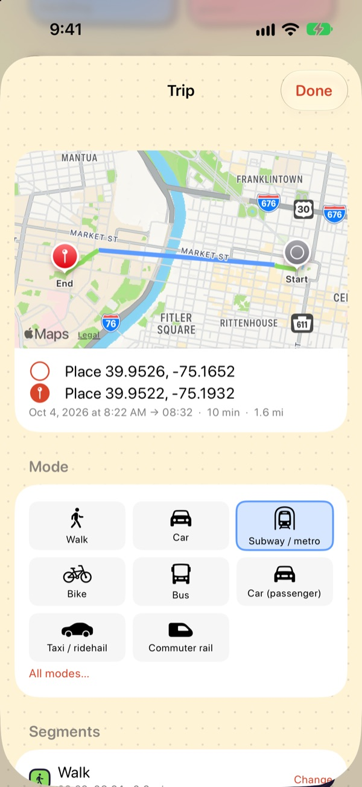

Get started
UI guide
A tour of every main screen, what each element means, and the "sticker" design system that ties them together.
Screenshots come from the simulator build with demo data (make sim).
Navigation
Five tabs sit in a floating sticker tab bar at the bottom. The selected tab grows into a labelled orange pill; the others are icons only. Settings is not a tab: it's the gear in the top-left of Today.
| Tab | Use it for |
|---|---|
| Today | The current (or any past) day: map, summary and diary. Most of your time is spent here. |
| Timeline | Browsing weeks and months, searching trips, flights and life phases. |
| Map | Your activity space over a period. |
| Stats | Survey-style numbers and charts, and period comparisons. |
| Places | Naming, categorising and merging places. |
Today

- HeaderThe gear opens Settings. The date title shows which day you're looking at; arrows step one day, the calendar jumps to any date.
- Mascot bubbleA one-line summary of the day ("5 trips and 4.1 mi…"). Pure flavour, generated from the day's numbers.
- Review bannerThe dark banner counts trips from the last 7 days that need a quick check. Tap it to go through them one by one.
- Day mapVisits as pins, trips as routes coloured by mode. Dotted segments are walking.
- Stat tilesTrips, distance, time travelling and places for the day. Units follow Settings › Display.
- "Your day, step by step"The diary, below the tiles. See next section.
The diary and review cards

- VisitsSolid white cards with a pin on the left rail: place name, arrival–departure and how long you stayed. A here now badge marks a stay that's still going.
- TripsRows between visits with a mode chip, time span, duration and distance. A trip made of several modes shows one chip per segment.
- Review cardUncertain trips get a dashed card, a check badge and "Did I get that right?". Tap the right mode, or the green ✓ to confirm it as is.
- Tap anythingAny visit or trip opens its detail sheet for full editing.
Trip detail

- Route mapStart and end pins with the route coloured by segment.
- SummaryOrigin and destination places, date, times, duration and distance.
- Mode gridYour most-used modes as big buttons; the current one is highlighted. All modes… lists the full set.
- Segments, purpose, notesFurther down: change each segment's mode, set the trip purpose, split the trip ("I stopped somewhere"), delete it ("This trip didn't happen") or reset to automatic.
Visits have a matching sheet: change the place, set times, split it ("I left and came back") or remove it ("This wasn't a stop"). See Correcting the diary for what each action does to the data.
Timeline
- Week cardTrips per day as bars, with arrows to move between weeks and the busiest day underneath. Dashed bars are days with no data.
- Find trips…Search and filter trips by mode, place, date range or weekends only.
- Flights & Life phasesYour flight log, and named periods (semesters, jobs, trips) used for comparisons in Stats.
- Month listOne card per day with its modes and trip count. A yellow "1 to check" badge means that day still has trips to review.
Map
- RangeThe calendar button (top-left) picks the period.
- LayersThe stack button (top-right) toggles places, routes, flights and the activity-space hull.
- Activity spaceThe shaded polygon is the convex hull of every place you visited in the period.
- Summary cardRadius of gyration, hull area, number of places and trips. Definitions are on Data model & export.
Stats

- Period pills7 days, 30 days, year, all time. Compare… puts two periods (or two life phases) side by side.
- Headline tilesTrips per day, distance per day, travel time per day and mean trip length, all per person-day.
- How you got aroundMode share bars, switchable between by trips, by distance and by time.
- Further downDeparture times, places, tours, weekday vs weekend, and "How these are calculated".
Places
- Search and sortSort by most time, visits, recent, A–Z, or show named places only.
- Waiting for a nameUnnamed places appear as dashed cards with a Name it button. Naming a place once makes every future visit to it recognised.
- Place cardsVisit count, total time and last visit. Tap a place to edit its name, category, radius and favourite flag, see its visit history, or merge it into another place.
Design system
The look is defined in one file, App/Support/Theme.swift, as the Toon namespace. The rules:
- Ink outlines: every surface has a 2.5 pt outline in ink
#22193A. - Solid offset shadows: a hard 4 pt ink shadow down-right instead of blur. Buttons "press in" by sliding onto their shadow.
- Flat bright fills on a warm, dotted cream background.
- Rounded, heavy type: SF Rounded for titles and numbers.
- Dashed = needs you: dashed outlines mark things waiting for input (trips to review, unnamed places).
Components
| Component | In code | Used for |
|---|---|---|
| Sticker card | .toonCard(fill:radius:shadow:dashed:) | Every card, tile and list row |
| Stat sticker | StatSticker | The coloured number tiles on Today and Stats |
| Pill button | ToonButtonStyle | Period pills, sort pills, "Name it" |
| Mode / place chip | ToonChip | Rounded-square icon tiles for modes and places |
| Badge | ToonBadge | "check", "here now", "1 to check" |
| Tab bar | ToonTabBar (RootView) | The floating bottom navigation |
| Background | .toonBackground() | Cream ground with a dot grid |
Palette
#22193A#FFF3D6#FF6B4A#FFC93C#8BDB5E#5C9BFF#FF7EB3#B596FF#FF9A4D#5FD3B0#6FD6E8#D8D2C4Colour meanings
Colours are consistent everywhere: a mode or place category has the same colour on the map, in the diary and in Stats.
| Colour | Modes | Place categories |
|---|---|---|
| lime | Walk (active modes) | Recreation, entertainment |
| sun | Bike, e-bike, scooter | Home |
| sky | Subway, rail, light rail (transit) | Work / school |
| grape | Car, taxi | Airport, stations, hotel |
| orange | Bus, coach, shuttle | Restaurant, café |
| bubblegum | Long-distance group | Grocery, shopping |
| aqua | Airplane | Medical |
| mint | Run | Friend / family |
| stone | Other / unknown | Unnamed places |
Mode colours are defined in App/Support/Formatting.swift (TravelMode.color, ModeGroup.color);
place colours in Theme.swift (PlaceCategory.toonColor).
Changing the UI? Keep new surfaces on .toonCard and colours in Toon so the look stays consistent,
and refresh these screenshots with make sim if a screen changes noticeably.